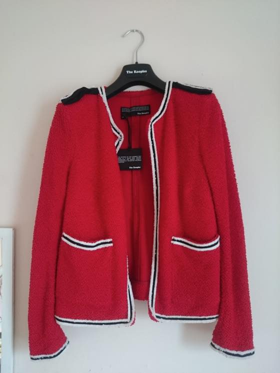
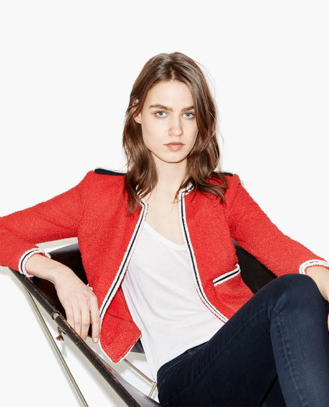
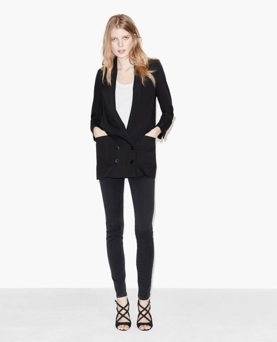
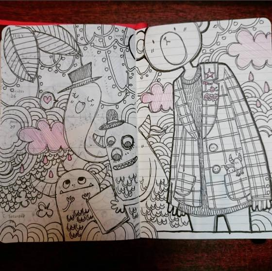
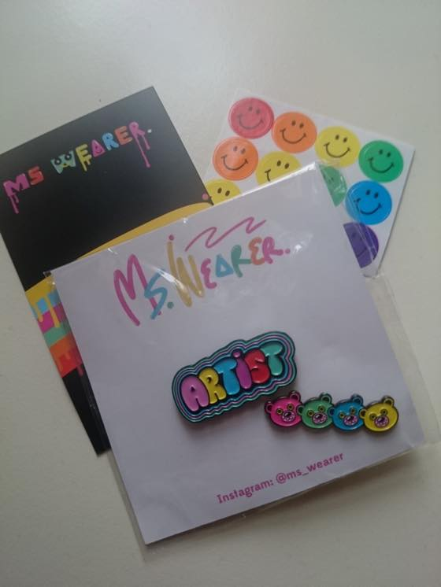
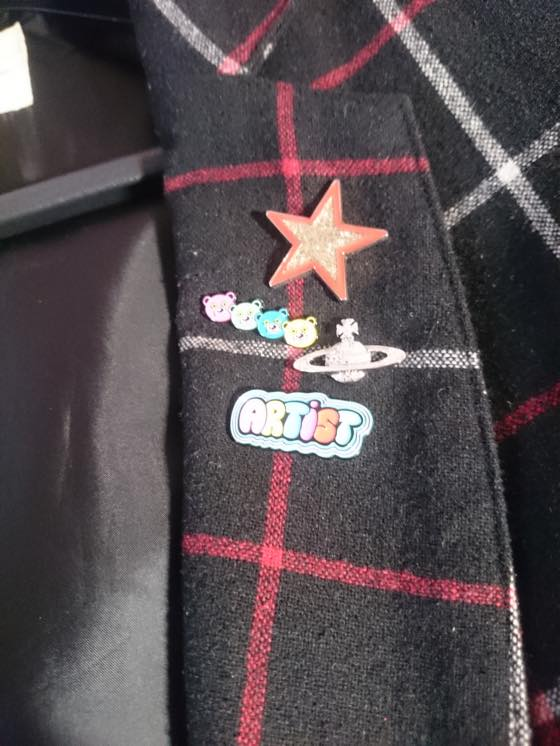
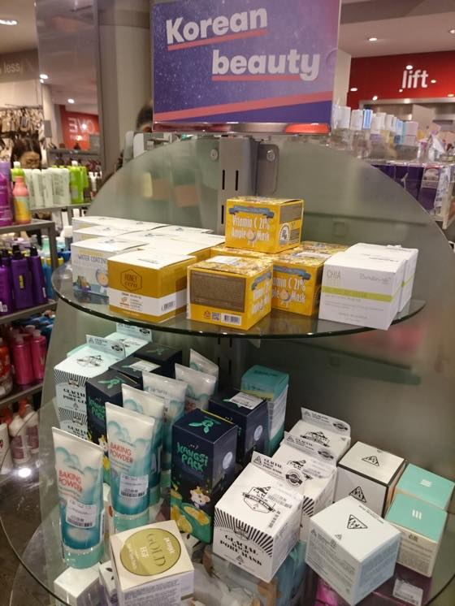

좋아하는 브랜드로 Bolongaro trevor / The Kooples / All saints 등이 있는데
그중 자켓 / 헐렝헐렝한 원피스류를 야곰야곰 사들이고 있습니다 ^^;;;;
최근에 구입한 쿠플스 자켓 두개 :3
이제까지 내 사이즈가 UK 8-10 이라고 철썩같이 믿고있었는데 UK 6-8 로 수정해야 할듯
올세인츠 가서도 10은 너에게 좀 클거같은데 6이나 8입어 라고 하심;;
근데 올세인츠 / 쿠플스 매장서 입어보기전에 난 이미 요 빨간 자켓을 사이즈 10으로 인터넷으로 주문해버렸고....OTL

JACKET WITH CONTRASTING BRAID
가디건 처럼 입는거라 엄청 크다는 느낌은 안 듭니다
스아실 배송받아본 후에 쿠플스 매장가서 다른자켓 입어봤는데 사이즈 6 / 8 / 10이 그냥저냥 다 맞아요 -_-;;;
신기한 몸뚱아리 ㅋㅋㅋㅋ
이건 공홈서 주문해서 프랑스서 날아오는데다가 LAST CHANCE 섹션에 있는거라 리턴시키는 와중에 변수(?)발생 + 귀차니즘에 걍 입기로 결정 :p
그리고 날이 급격히 추워져서 옷장에 모셔놓고있습니다

모델 착샷
주머니 달려있어서 합격!! (응?)

그리고 두번째로 구입한게 요 Double breasted jacket
참으로 비슷한걸 꾸준히 계속 삽니다 ㅋㅋㅋㅋㅋ 남성복에 여성스러운 터치를 가미한 더블 자켓 어쩌구 라고 설명이 되어있습니당.
이건 사이즈 6 / 8 고민하다가 8로 결정 :3
처음 입어봤을때는 인간이 너무 네모네모해지는거 아닌가 -_-;; 싶었는데 막상 화장다하고 외출모드로 입어보니 잘어울리고 맘에들어서 빵끗 웃었습니다.^^;;; 그리고 오늘 첨 개시했는데 아침에 자켓위에 커피쏟았..........OTL
드라이비용 비싼데에에 ;ㅂ; 예전에 비둘기가 내 가죽자켓위에 똥싸서(.....) 나에게 35파운드를 쓰게한 이후로 또다시 세탁소 도네이션.....OTL 게다가 이번엔 셀프삽질.....크흑흑 ㅜㅜ

우이되었든!! 자켓!! 자켓의 계절이 돌아왔습니다 :D :D :D 씐난다!!
이때쯤 최고로 잘입고 다니는 체크무늬 자켓

최근에 구입한 브로치 입니다
아티스트 / 핀베어 평소 좋아하는 일러스트레이터인데 핀버튼 보구 번개같이 구매버튼을 눌렀어요
인스타 구경하다보니 그림그리는 사람들 핀버튼 제작이 인기인가봐요
나...나도!! 를 외치며 제작욕구 마구 샘솟고 있습니다 ^^;;

앤디워홀 전시에서 산 별브로치 (아마 저게 2008년 영쿡서 처음 본 전시에서 3파운드 정도 주고 산걸로 기억) + 비비안웨스트우드 브로치
에 두개가 새로 추가 ^^

TK MAXX에 K-뷰티 코너가 생겼습니다
에뛰드 하우스 베이킹파우더 클렌징폼이 무려 9.99파운드에 팔리고 있어요 ㅋㅋㅋ (약 14,000원)
역시 수입품은 다 비싸지는 것인가........OTL;;
여름에 신나게 질렀다고 생각했는데 가을신상이 나오기 시작하는군욤;;
난 안될거야........OTL 뭘하나 사면 위시가 두개가 늘어 ㅡㅡ;;;;